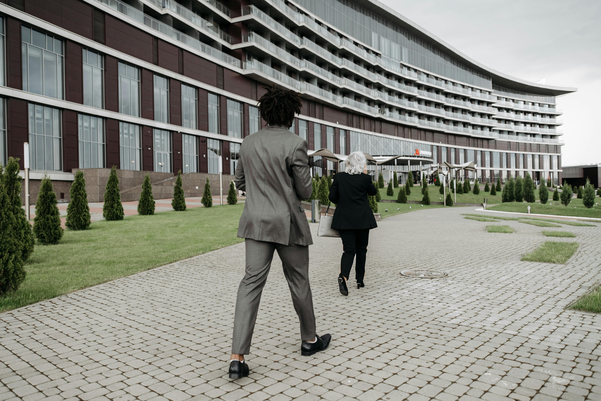

Commercial Development
The City of Waverly is actively expanding its commercial landscape through strategic planning, public-private collaboration, and investment incentives. Our vision is to build a vibrant, accessible, and sustainable commercial sector that meets the needs of businesses and the community.
Development Priorities
- Promote mixed-use and retail hubs in high-growth corridors.
- Encourage redevelopment of underutilized commercial spaces.
- Support site selectors and developers through streamlined processes.
- Offer tax incentives and grants for job-creating businesses.

Retail Expansion
Waverly is attracting new retail and service providers to meet growing demand.

Downtown Revitalization
We’re investing in downtown spaces to support local shops and community spaces.

Business Parks
Our planned commercial zones include infrastructure-ready sites for light industry.